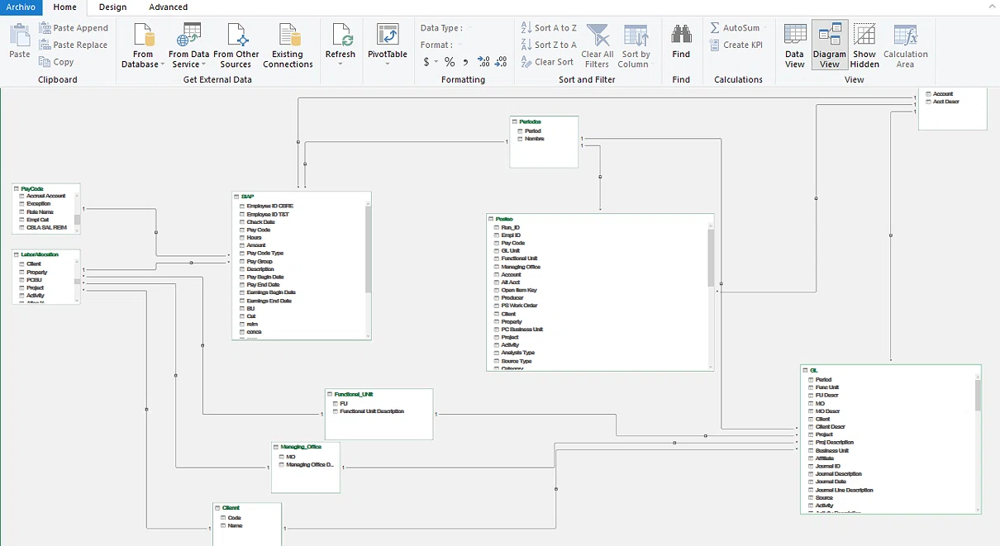
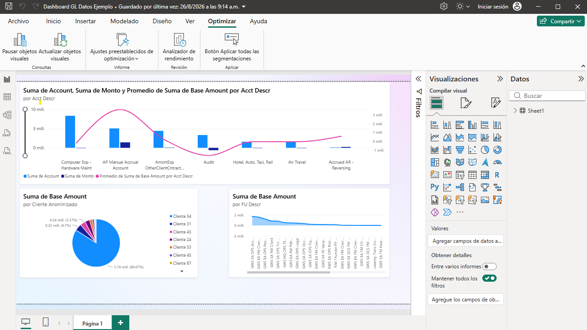

No solo creo visualizaciones; diseño ecosistemas de datos robustos. Desde el modelado relacional (Star Schema) hasta la interactividad en la nube, construyo herramientas que transforman transacciones en información ejecutiva para FP&A.
1. Data Architecture & Modeling (Power BI)
El verdadero poder de un reporte reside en su backend. Aquí documento el esquema relacional que unifica transacciones contables (GL), nómina y centros de costo, optimizando el rendimiento de las medidas DAX.

2. Dashboard Ejecutivo (Power BI)
Visualización final orientada a la toma de decisiones. Este panel consume el modelo anterior para presentar indicadores clave (KPIs) de rentabilidad y flujo de caja de forma intuitiva.

3. Interactive Dashboards (Looker Studio)
Despliegue de tableros en la nube conectados a Google Sheets. Esta arquitectura permite realizar análisis "What-If" y simulaciones de escenarios en tiempo real, demostrando agilidad en la creación de reportes ejecutivos sin depender de licencias adicionales.